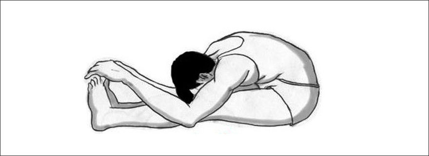

आसन > पश्चिमोत्तानासन :

-
पश्चिमोत्तानासन, जिसे "सीटेड फॉरवर्ड बेंड" भी कहा जाता है, रीढ़ की हड्डी को लचीला बनाने और पाचन
तंत्र को सुधारने के लिए एक उत्कृष्ट आसन है।
पश्चिमोत्तानासन करने की विधि :
- आरंभिक स्थिति: समतल जगह पर बैठें और दोनों पैरों को सामने की ओर सीधा फैलाएं।
- सांस लेते हुए: अपने हाथों को ऊपर की ओर उठाएं और रीढ़ को सीधा रखें।
- आगे की ओर झुकना: धीरे-धीरे सांस छोड़ते हुए आगे की ओर झुकें और अपने पैरों की उंगलियों को
छूने का प्रयास करें।
- हाथों की स्थिति: यदि संभव हो, तो अपने पैरों को पकड़ें या पैरों के पास जमीन को छूने का
प्रयास करें।
- आँखें बंद करें: इस स्थिति में कुछ समय तक रहें और गहरी सांस लें।
लाभ :
- पश्चिमोत्तानासन रीढ़ की हड्डी को लचीला बनाता है और शरीर की थकान को दूर करता है।
- यह पाचन को सुधारता है और मन को शांत करता है।
Move to top